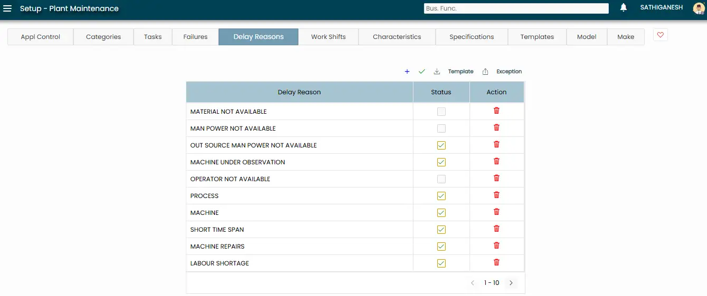

<div data-category="Plant Maintenance" data-title="Delay Reasons" data-updated="January 27, 2026" data-contributors="RoadmapIT" data-breadcrumb="Home,Plant Maintenance,Delay Reasons">
  <div class="page-content">
    <p>Delay reason is a term that describes the cause or factor that prevents or postpones a maintenance task from being completed on time. Ex: Unforeseen equipment failures, Parts shortages, Labor shortages, scheduling conflicts, permits and approvals etc.</p>
    <p>The Delay Reasons are defined in this screen.</p>
    <h5>Navigation path:</h5>
    <p class="fs-6">Plant Maintenance \ Setup \ Setup-Plant Maintenance \ Delay Reason</p>
    
    <ul style="list-style-type: none; align-content: center">
      <li class="mouse-icon">Click to <i class="bi bi-plus fs-4 mx-2 text-primary"></i> Add.</li>
      <li class="mouse-icon">Enter the Delay Description</li>
      <li class="mouse-icon">Click on <i class="bi bi-check-lg fs-4 mx-1 text-success"></i> button to save</li>
    </ul>
  </div>
</div>
